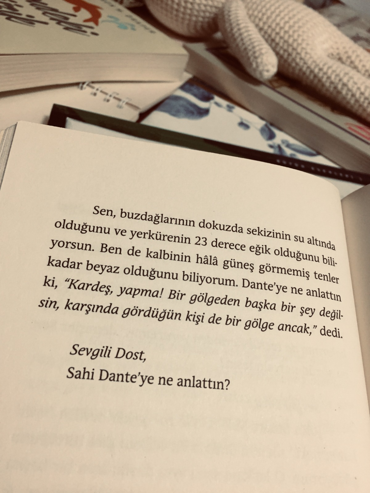
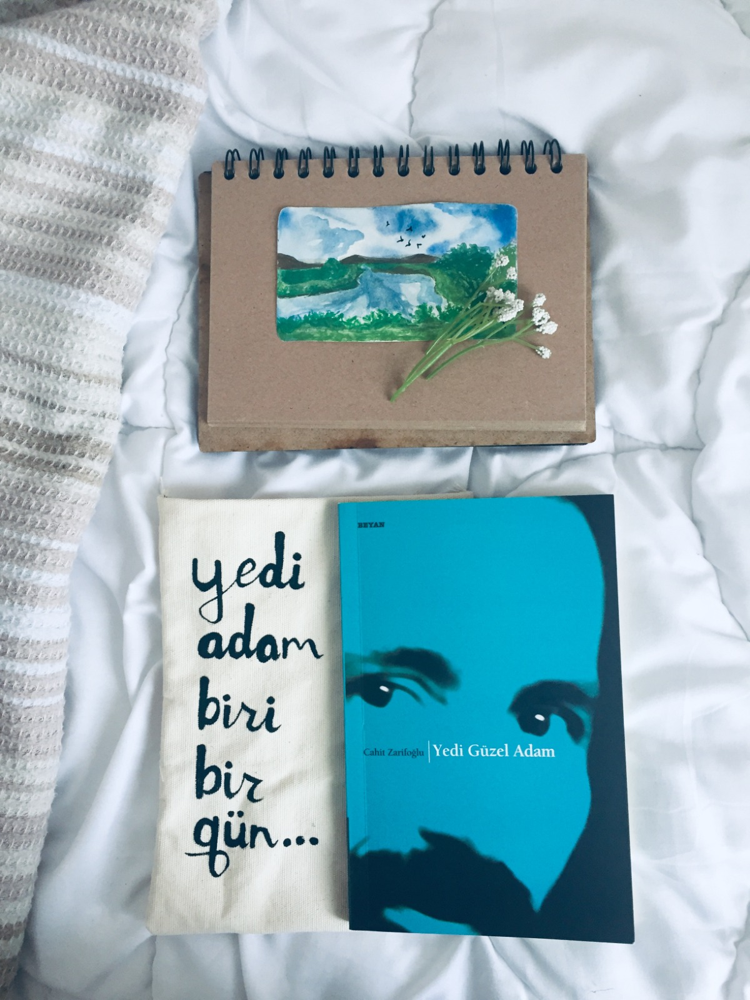
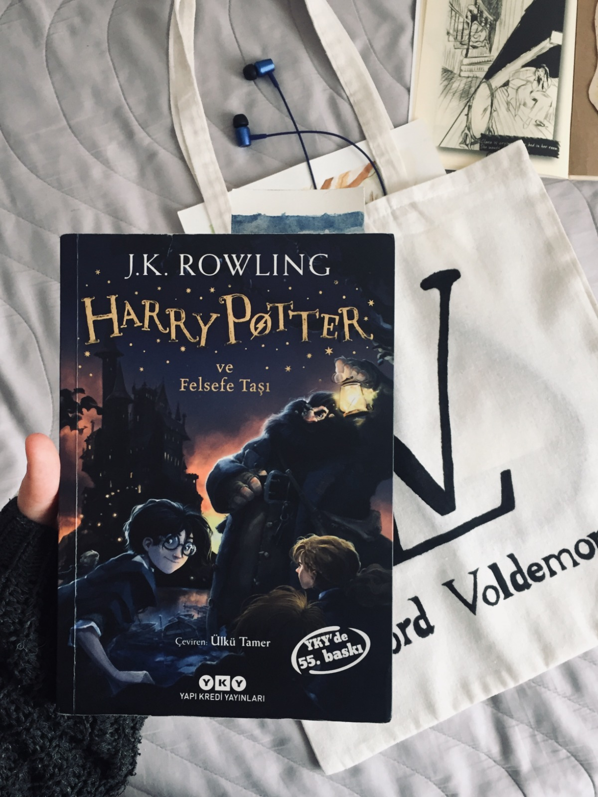
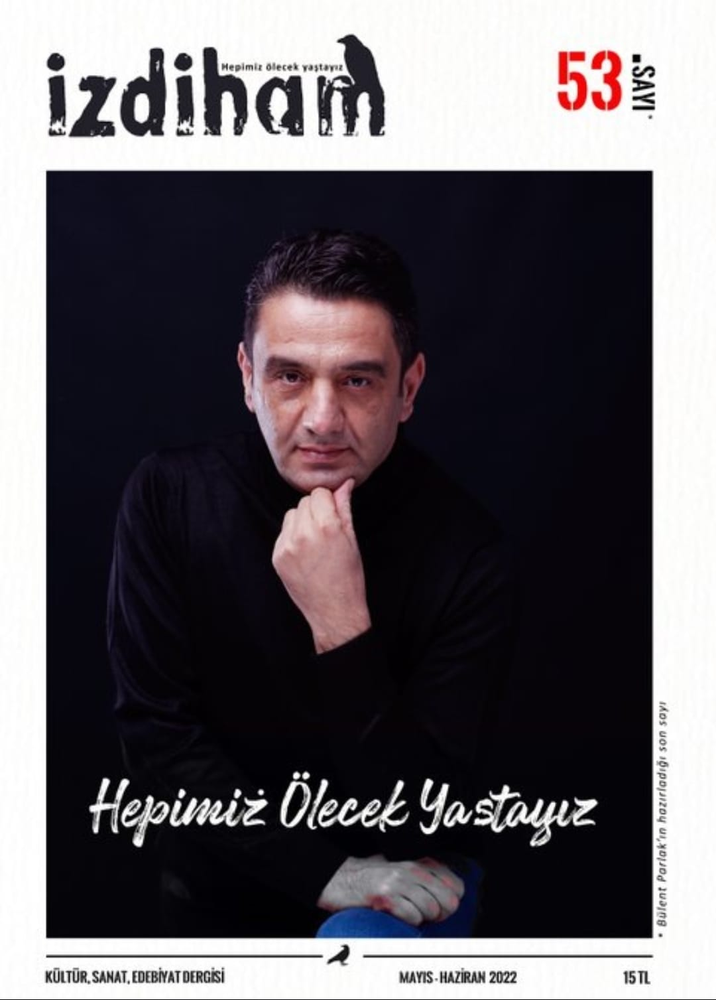

Okuma serüvenime ortaokulda tek solukta bitirdiğim Kaan Murat Yanık'tan "Butimar" kitabıyla başladım diyebilirim. Daha sonrasında akıcılığı yüksek
basit romanlar okuyarak alışkanlık kazanmaya başladım. Liseye geçtiğimde ise bu alışkanlığın paragraf soruları çözerken bana katkı
sağladığını söyleyebilirim. ________________
Şu tarz okumayı severim diyebileceğim bir tür yok. Sadece dünya çapında tanınmış kitapları her okuduğumda hiçbir defasında
pişman olmadığımı söyleyebilirim. Fovori kitaplarım: Gurur ve Önyargı Butimar Posta Kutusundaki Mızıka Compañero Rosita
Müslümanca Düşünmek Üzerine Denemeler Uçurtma Avcısı Satranç Bin Muhteşem Güneş Yoldaki Mühendis İçimdeki Müzik Bülbülü Öldürmek
Uzakların Şarkısı
- Gülseher Başağa
Compañero Rosita
9/10
Doğa,enerjiler, kominüst bir genç kız ve hakikat arayışı. Bunların birleşimiyle ortaya çıkan ve Peru'dan İstanbul'a
uzanan gerçek bir hikaye.
Alıntı: Biliyor musun Tanya, karşılıklı konuştuğumuzu zannettiğimiz insanların
bir çoğu aslında sıranın kendilerine gelmesini bekler. Yani seni dinlemezler.

Posta Kutusundaki Mızıka
10/10
"Sevgili Dost'a" yazılmış kıısa mektuplar yer alıyor. Tek oturuşta nefessiz okunulabilir demiyorum elbet ama iyi bir başucu
kitabı. Sosyal saptamalar çarpıcı şekillerde edebiyata bulandırılmış.
Alıntı: Halbuki sevgi, ayrık otları gibi rastgele büyümemeli kalbimizde..

Yedi Güzel Adam
5/10
Cahit Zarifoğlu'nun şiirlerinden oluşan bir kitap. Şahsen Cahit Zarifoğlu'nu anlamak zor. Yedi adam biri bir gün birçok şey yaptılar ve gereğini
bellediler. Özetle Zarifoğlu yazdıklarını anlaşılır kılmadı ama hissettirdi. :)
Alıntı: "Ben
Çizilmiş bir yaşama atanmışım gibi."

Harry Potter
7/10
9 çeyrek trenine bavul hazırlamayanımız zaten yoktur diye
düşünüyorum. Bu büyülü dünyayı elbette duymuşuzdur. Bunun haricinde
Harry Potter'ın kitap ve filmlerinin bu kadar birebir olması da hem okur hem izleyici
kitlesinin altını çizdiği bir mevzu.
Alıntı:" Efendisi Dobby'e çorap verdi."

İzdiham Dergisi
8/10
İzdiham uzun süre sonra ilk kez beğendiğim bir dergi.İçeriklerinin kaliteli olduğunu düşünüyorum.
Özellikle kapak tasarımla son derece dikkat çekici. Ayrıca kıyamet kopma ihtimaline karşı da aboneliği bulunmamakta:)